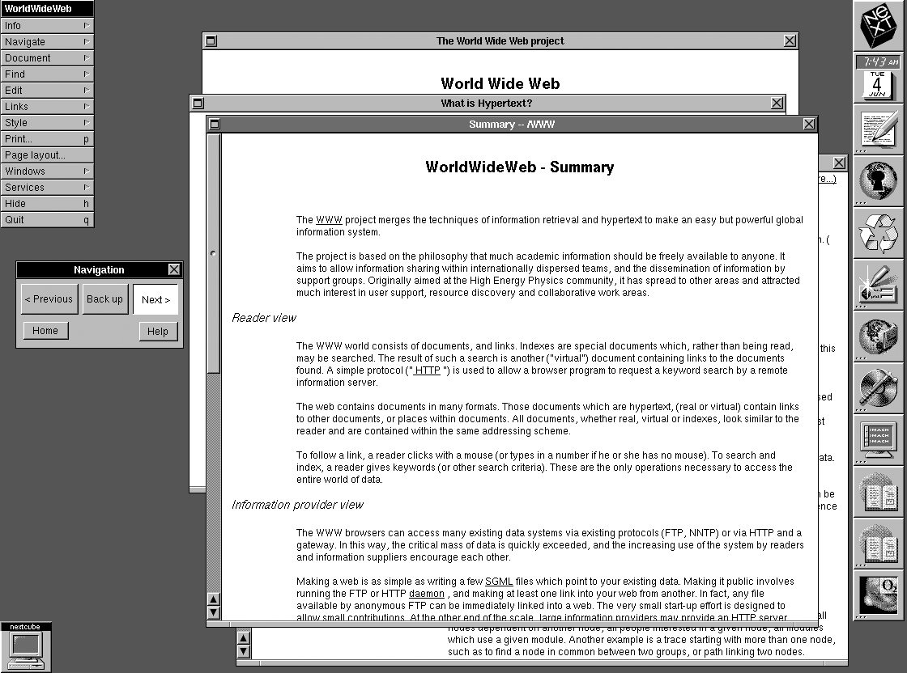

EN LAS REDES DE LA TELARAÑA
EXPANSIÓN
La World Wide Web se convirtió en un sistema que facilitaba la lectura de información almacenada en los distintos servidores
alrededor del mundo, todo por medio de un programa de navegación.
Para la segunda mitad de 1990, desarrollaron el primer navegador web, llamado WorldWideWeb, pero después lo rebautizarían como Nexus, para evitar las confusiones entre el navegador y el sistema informático.
Para la segunda mitad de 1990, desarrollaron el primer navegador web, llamado WorldWideWeb, pero después lo rebautizarían como Nexus, para evitar las confusiones entre el navegador y el sistema informático.

WorldWideWeb fue el primer navegador de internet
Después surgieron otros navegadores, como el Line Mode Browser y el ViolaWWW, siendo el último desarrollado por Pei-Yuan Wei,
usando un modo texto y sobre un sistema operativo UNIX, convirtiéndolo en el navegador más popular entre los primeros usuarios de la WWW.
Navegador ViolaWWW en sus primeras actualizaciones
El primer servidor web se encontró en el CERN nombrado NeXTcube y fue puesto en línea en noviembre de 1990. El 6 de agosto de 1991,
Berners-Lee envió un pequeño resumen del proyecto World Wide Web al newsgroup: alt.hypertext donde explica sobre lo que era el World Wide Web,
como uno podría tener el navegador y como podía establecer un servidor web propio.
Debido a que tanto el software del servidor como el del cliente fue liberado de forma gratuita desde el CERN, su difusión fue muy rápida. De 26 servidores en 1992 se convirtieron a más de 200 servidores para octubre de 1995.
Debido a que tanto el software del servidor como el del cliente fue liberado de forma gratuita desde el CERN, su difusión fue muy rápida. De 26 servidores en 1992 se convirtieron a más de 200 servidores para octubre de 1995.
La Computadora NeXT Cube N1000 fue la utilizada en la creación del WWW
Investigado y Programado por: Joel Alfonso Álvarez del Castillo Romo